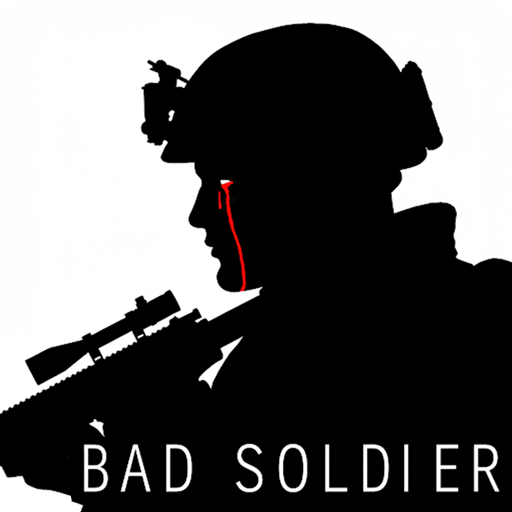
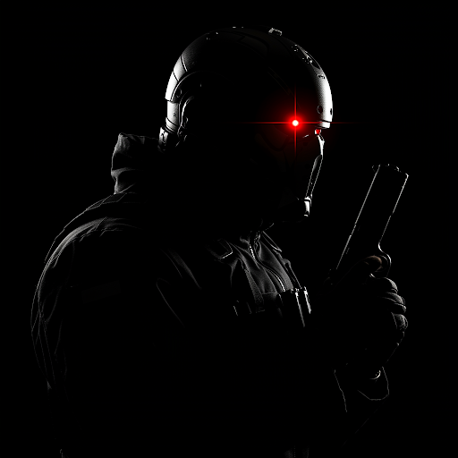

Bad Soldier
74A es un soldado mejorado, sin recuerdos, adoctrinado para ser una máquina de matar que, luego de estar al borde de la muerte, comienza a tener memorias borrosas sobre su desconocido pasado. Cuestionándose el porque de su existencia, tratará de descubrir la verdad de su vida y como terminó convertido en soldado.

War Weapons
...